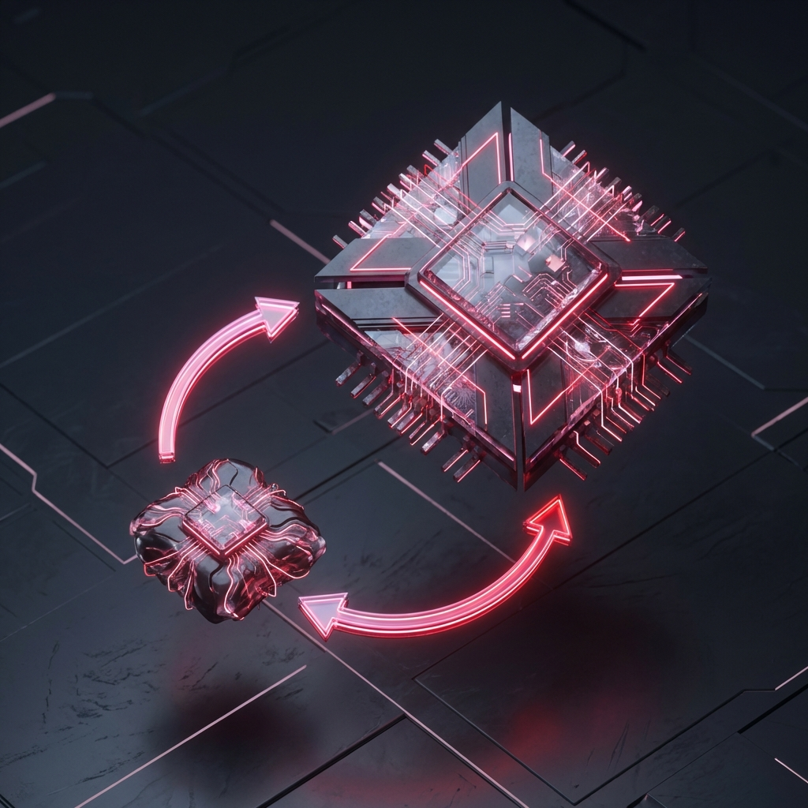

Engineering Agents for Production
Architecting
Deterministic Control Loops
around Non-Deterministic LLMs
I build scalable agentic workflows, RAG systems, and distributed training pipelines. Turning research concepts into reliable infrastructure.
AI Agent Engineer Specializing in autonomous workflows & infra
I bridge the gap between AI research and production-grade
infrastructure. With a background in distributed GPU training and
genomics sequence classification, I specialize in building the
orchestration layers that make LLMs reliable at scale.
Whether it’s architecting agentic workflows to automate complex
SQL generation or optimizing inference performance for
multi-billion parameter models, my goal is to turn
non-deterministic research concepts into high-availability systems
that save real-world time and cost.
~20 hrs/wk
Of Manual SQL Generation Automated
70%
Training Cost Reduction via Distributed Tuning ↗
Technical Approach
Building resilient systems that handle unpredictability. I prioritize observability, fault tolerance, and type-safety to ensure reliable behavior in production environments.
Reliability First
Implementing circuit breakers, backoff strategies, and dead-letter queues.
Deterministic AI
Constraining LLM outputs via Pydantic schemas and strict validation layers.
Observability Driven
Structured logging and metric tracing to ensure system transparency.
agent-controller — zsh
vamsi@dev-box:~$
kubectl logs pod/vamsi-brain-node-1 -n production --follow
[INFO]
Initializing context... Coffee_Level: 98% (OPTIMAL)
[INFO]
Loading model weights... Quantizing to 4-bit because VRAM is expensive.
[WARN]
Detected anomaly: "It works on my machine".
[INFO]
> Containerizing environment to fix anomaly... DONE.
[ERROR]
DNS_PROBE_FINISHED_NXDOMAIN. It's always DNS.
[INFO]
Resolving... Bypassing DNS with hardcoded IP (don't tell security).
[INFO]
Deploying 'Agent-Sandbox' to production on Friday...
[CRIT]
Guardrails triggered: "Senior_Dev_Protocol_Violation". Aborting.
[SUCCESS]
Rescheduling deployment to Monday. System Stable.
❯
Projects

Experience
Software Engineer (AI Platform)
Cloud Systems LLC • Jul 2025 - PresentArchitected agentic workflows to automate 65% of internal data requests. Rebuilt ETL pipelines reducing runtime by 25% and deployed containerized services on K8s maintaining 99.9% uptime.
Machine Learning Engineer
Virginia Tech • Aug 2024 - Jul 2025Increased genomics throughput by 32% via LoRA/Soft-prompting. Orchestrated 100+ distributed GPU experiments and containerized fine-tuning workflows to slash setup time.
Graduate Research Assistant
Virginia Tech • Jun 2023 - May 2024Improved NER F1-score by 8% using proxy-tuned LLaMA 2 models. Optimized inference performance by 30% and reduced training costs by 70%.
Software Engineer
UJR Technologies • Jul 2021 - Dec 2022Standardized REST APIs reducing integration defects by 40%. Automated CI/CD pipelines via GitHub Actions cutting release failures by 20%.
Education
Virginia Tech
Master of Science, Computer Science
GPA 3.9/4.0
Vel Tech University
Bachelor of Technology, Computer Science and Engineering
GPA 8.24/10
📜 Selected Research
Core Capabilities
A specialized toolkit focused on building high-scale distributed systems and autonomous AI infrastructure.
Distributed Systems
- Kubernetes (K8s) & Docker
- Go (Golang) Microservices
- gRPC & Protobuf
- Terraform / IaC
Agentic AI
- LangChain & LangGraph
- RAG (Retrieval Augmented Gen)
- Fine-tuning (LoRA/QLoRA)
- PyTorch & Transformers
Full-Stack Performance
- FastAPI (Async/Await)
- Next.js / React
- Redis Caching & SQL Tuning
- CI/CD (GitHub Actions)
Outside Work
👨🍳
Cooking
Experimenting with Indian dishes
🏏
Cricket
Weekend matches with friends
🚀
Space
Deep space exploration enthusiast
🥾
Hiking
Exploring trails & nature
Let's talk
Open to roles and collaborations. The fastest way to reach me is email or LinkedIn.